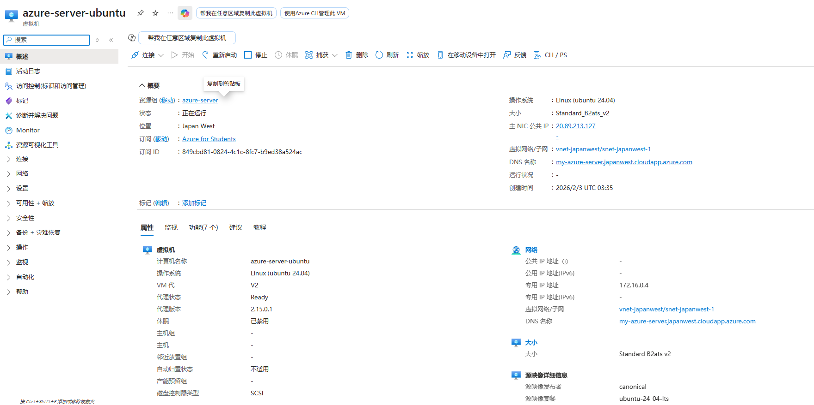
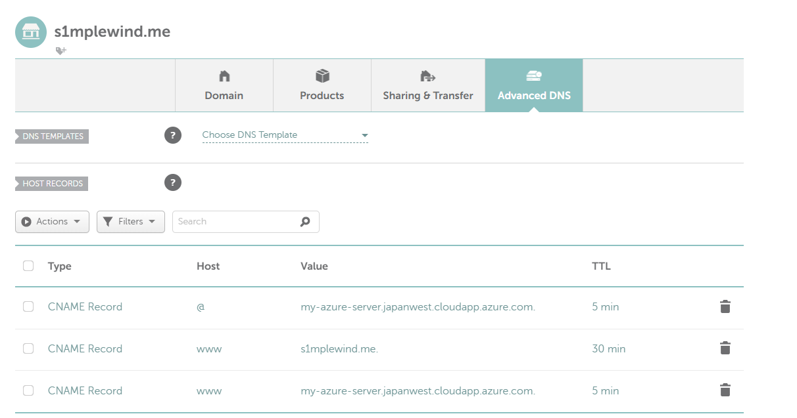

azure-server
使用azure搭建服务器
最近看到github education有能白嫖的azure额度，以及一年的免费域名，于是乎就整了一个服务器玩玩
0.准备阶段
1）学生认证
首先需要进行github education的申请github education，用自己的教育邮箱、学生证即可。因为要验证你的地区，所以申请的时候可以连上学校的vpn，这样亲测认证方便一点
2）azure
然后就是去登录azure账号，搜一下azure，登录账号的时候选择sign in with Github即可
（如果直接用GitHub登录失败，可能是没识别绑定的邮箱，比如你github用的主邮箱不是教育邮箱，这个时候用主邮箱注册一个微软账户，然后再用GitHub登录azure就行了）
3）域名（可选）
GitHub教育包提供了一年的免费域名，进入student dev pack，找到·namecheap·，就可以搜索一个你喜欢的域名，领取一年免费的使用权
如果要在服务器上部署网页的话，
1. 搭建服务器
搭建服务器就是在azure里面创建一个虚拟机，然后就可以玩了
这一步网上有很多教程，这里贴一个知乎教程，可惜好像以后basic里不能免费给公网ip了
-
如果在注册的时候有选择地区的话，最好开梯子并选一个海外的地区，因为海外地区每月的出站流量免费额度更多，好像是每月能多15+100G，不过我现在也没搞清楚。国内的话则是只有15G
-
注意教程里说的 选择标准SKU，静态ip。虽然会额外收费（每年要花掉 43.8 美元）但是也没有什么别的办法。而且静态ip确实方便一点
以下是我的虚拟机

2.域名
如果要部署网站的话，可以把刚刚买到的域名绑定一下
注册完虚拟机之后，直接在我们的域名里加一个A record，并且填入我们的ip就行
可以看到上图中有一个DNS 名称,这里刚创立的时候其实是没有的，你可以输一个自己喜欢的，然后azure会帮你用 Fully Qualified Domain Name (FQDN) 来绑到这个域名。
这样之后就可以在我们刚刚“买”的域名中配置一个CNAME,如下图所示，添加一条记录即可

3.搭网站
到这就可以在上面搭建你的网页了
但是我发现我有github.io了，不需要一个再部署静态网页的地方，这里就没有写网站
所以最后把域名绑到github.io上了
4. vpn
本着不浪费的原则，打算当梯子用
正在更新中
见博客